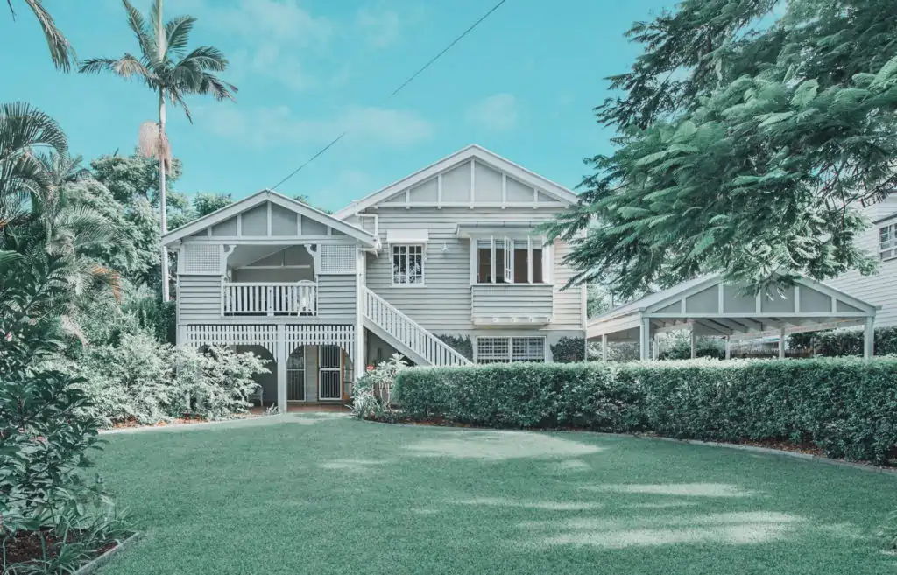

Primer alojamiento australiano
Hostel, los hostels o backpackers son los típicos albergues de mochileros y gente joven que está de paso por la ciudad. Son sin duda la opción más económica a tu llegada y te permite conocer gente joven con la que te puede relacionar nada más llegar a Australia.
¿Y DÓNDE DUERMO?
Hay muchos tipos de alojamiento distintas para los jóvenes internacionales que justo aterrizan en Australia, el objetivo de este vídeo es explicarte las opciones más populares, con sus puntos a favor y en contra.
Visitar linkResidencia de estudiantes, suelen ser habitaciones individuales o compartidas, un poco más caras que un hostel pero más tranquilas. Igual que con los hostels, tenemos acuerdos con muchas residencias. Así que pregúntanos y te echaremos una mano. Alojamiento privado, si vienes con tu pareja o sois un grupo de amigos es una buena opción reservar un airbnb para las dos primeras semanas. Así tenéis más intimidad y comodidad.
Estos son alojamientos temporales, para salir del paso hasta que encuentres un piso definitivo aquí en Australia. Encontrar un piso a distancia antes de llegar a Australia también es una opción, aunque tendrás que pagar una fianza de una habitación que nunca has visto en directo, así que ten cuidado.
Recomendaciones y aplicaciones
Recomendaciones para tu primer alojamiento
12 CONSEJOS PARA BUSCAR ALOJAMIENTO. ‘TIPS’ QUE NECESITAS PARA QUE TU BÚSQUEDA DE PISO EN AUSTRALIA SEA UN ÉXITO
Acceder al linkFlatmates finders
No pierdas el tiempo rastreando listados irrelevantes. Encuentra tus parejas perfectas rápidamente.
Ir al linkFlatmates.com.au
El alojamiento compartido más grande de Australia sitio web. Crea un anuncio para que las personas que llenan una habitc¡ación te encuentren.
Ir al linkGumtree
En esta aplicación puedes encontrar de Ttodo. Desde habitaciones, hasta muebles, ropa y hasta coches. Entra aquí para encontrar lo que estas buscando a los mejores precios.
Ir al linkTipos de alojamiento
Uno de los aspectos más importantes a la hora de empezar tu nueva vida en Australia es encontrar alojamiento.
Al contrario de lo que seguramente estés pensando, encontrar alojamiento temporal en esta parte del mundo es bastante fácil y hay muchas opciones diferentes dependiendo de la experiencia que busques y del presupuesto que tengas.
1. ALOJAMIENTO EN HOSTEL / BACKPACKER
Alojarte en una habitación compartida de un hostel o backpacker (como se les llama en Australia) es la opción más común y fácil para tus primeros días o semanas.
Está claro que no querrás compartir habitación con varias personas durante toda tu estancia y, si no te has alojado antes en ningún backpacker o eres una persona introvertida, puede que no te haga demasiada gracia compartir habitación con desconocidos, pero te aseguramos que es una experiencia que vale la pena porque conocerás a mucha gente que está en tu misma situación (recién llegadx a Australia) y harás amigxs ya en tus primeros días incluso horas. Además, será solo por un período corto de tiempo mientras te adaptas y encuentras casa a la que mudarte.
O puede que ames la experiencia y decidas alargar tu estancia en el hostel. El precio de una habitación compartida en un backpacker suele estar entre los 25-50$ por noche, dependiendo de muchos factores como la ubicación del hostel, el número de camas en la habitación (que suele empezar en 4 personas / 2 literas), si es temporada alta en esa ciudad, etc.
Además, los hostels suelen estar muy bien ubicados (en el centro y cerca de estaciones de tren, metro y autobuses) lo que te ayudará a situarte y empezar a conocer la ciudad en tus primeros días. Lo más recomendable es que elijas uno que se encuentra también cerca de la escuela en la que estudiarás para ir familiarizándote con la zona (recuerda que es donde pasarás la mayor parte del tiempo).
En Australia la red de hostels es muy amplia en todo el país y además de ser tu mejor opción cuando llegues, también los usarás mucho cuando viajes por Australia o vayas a visitar otras ciudades (es la opción más barata para viajar después del camping).
2. ALOJAMIENTO EN PISO COMPARTIDO
La opción que más recomendamos para disfrutar al máximo de la experiencia australiana es alquilar una habitación en una casa o piso compartido.
En la casa vivirán otros estudiantes, work and holidays, australianos… Es decir, que tienes tu propia habitación y compartes con otra gente las zonas comunes de la casa como el baño, el salón y la cocina. Es la opción perfecta para tener intimidad y al mismo tiempo conocer gente, practicar inglés y compartir la experiencia con otras personas como tú.
Lo ideal es alojarte en un backpacker en tus primeros días y desde ahí empezar a buscar habitación. No recomendamos que busques una habitación desde España ya que es importante que la veas antes de decidirte y que conozcas en personas a los que serán tus compañeros de piso. Y por supuesto que no pagues nada online ni envíes dinero por una habitación que no hayas visto primero.
Ya sé que la idea es muy tentadora y seguramente las primeras opciones que encuentres cuando empieces a buscar habitación sea compartiendo piso con compatriotas. Pero, por favor, ¡no vayas a vivir con españoles en Australia! aprovecha la oportunidad de compartir casa con personas de otros países o incluso australianos para practicar tu inglés y hacer amigos de otras partes del mundo. Es una experiencia super enriquecedora y al final de tu tiempo en Australia te alegrarás un montón de haberla tenido. Si no te pasarás todo el tiempo hablando español en casa y… ¿quién se viene a la otra punta del mundo para eso?
3. ALOJAMIENTO CON UNA FAMILIA AUSTRALIANA
Otra opción aunque no tan económica- y también frecuente entre estudiantes internacionales (sobre todo aquellos que van a estar en Australia por un período corto de tiempo, desde unas semanas hasta 3 meses) es alojarte en casa de una familia australiana.
Desde luego es la mejor opción para mejorar el idioma y para conocer más de cerca la cultura y forma de vivir de los australianos, convivir con una familia te hará tener la experiencia más local posible en esta parte del mundo y te hará aprender inglés mucho más rápido y hacerte con el acento aussie
También es muy buena opción para los que salen de casa por primera vez porque siempre estarás arropado por la familia, compartirás comidas y cenas con ellos, participarás en sus planes del fin de semana…
Como he dicho al principio depende mucho de la experiencia que estés buscando en Australia y del tipo de persona que seas.
4. ALOJAMIENTO EN UNA RESIDENCIA DE ESTUDIANTES
Si vienes a Australia a estudiar algún curso con una visa de estudiante, una opción bastante cómoda es la de alojarte en una residencia de estudiantes que generalmente estará dentro de la escuela/universidad o muy cerca de ella.
Dependiendo de lo que estés buscando y de tu presupuesto, encontrarás muchas opciones distintas: habitación individual o compartida, con baño privado o baño compartido, con pensión completa o media pensión (desayuno, comida y cena). También incluyen zonas comunes compartidas como cocina, comedor sala de estudios, patios exteriores o terrazas, salón, sala de tv…
5. TRABAJAR A CAMBIO DE ALOJAMIENTO
La última opción de alojamiento que puedes encontrar en Australia es también muy común entre los viajeros o los que se van con una Work & Holiday visa, quizás no tanto entre los estudiantes ya que has de compaginar este trabajo con la escuela y quizás también con otro trabajo remunerado (si quieres ganar algo de dinero).
El caso es que, especialmente en los hostels o backpackers, está la opción de trabajar a cambio de alojamiento y comida. Haciendo camas, limpiando las habitaciones, los baños, la cocina… o incluso ayudando en la recepción si tienes un buen nivel de inglés. Esta opción sí es compatible con ir a clase e incluso con trabajar tus 20h a la semana en otro sitio y encima te ahorras el alojamiento.
¿Cómo conseguir este tipo de intercambio? Básicamente cuando llegues a Australia preguntando en los hostels de tu ciudad, incluso antes de llegar puedes hacer una búsqueda online y contactarlos.
También puedes utilizar webs como HELPX, donde encontrarás ofertas de alojamiento a cambio de trabajo prácticamente en todo el mundo, aunque lo que nos interesa en este momento es Australia. Si vienes con visado de estudiante recuerda que ASISTIR A CLASE ES OBLIGATORIO, por lo que tienes que tener muy en cuenta la ubicación del lugar (que esté cerca de la escuela) y las horas de trabajo que te piden al día (que puedas compaginarlas con las horas de clase).
Sin embargo, dependiendo del trabajo que encuentres en Australia quizás te compense más usar las horas que no estás en clase para trabajar remuneradamente (recuerda que con el visado de estudiante se te permite trabajar 20h a la semana) y pagarte una habitación o considerar alguna de las opciones anteriores. Y dejar esta opción para tu período de vacaciones durante el que sin duda querrás viajar por el país, y este método de trabajo a cambio de alojamiento te permite hacerlo a coste mínimo.
Costos aproximados
Los costos de vida en Australia pueden variar de ciudad a ciudad, dependerá mucho del tipo de vivienda que se elija, la cantidad de personas y el equipamiento que incluya el inmueble a rentar.
Encontrarás diversas alternativas de alojamiento en Australia, generalmente, sus costos se calculan por semana.
| Tipo de alojamiento | Tiempo de estancia | Costo aproximado |
|---|---|---|
| Hostales y casas de huéspedes | Semanal | AUD 90 a AUD 150 |
| Alquiler compartido | Semanal | AUD 95 a AUD 215 |
| Casa de Familia | Semanal | AUD 235 a AUD 325 |
| Alquiler de una habitación | Semanal | AUD 185 a AUD 440 |